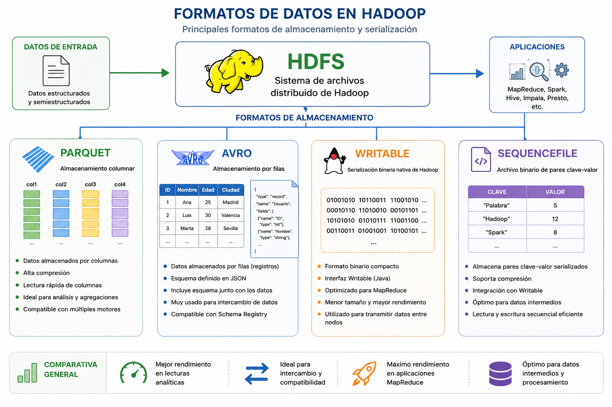

Capítulo 3. Ecosistema de Hadoop
Estructura de Hadoop
Estructura de Hadoop
Uno de los principales retos en los sistemas Big Data consiste en almacenar y procesar grandes volúmenes de información de forma eficiente. En Hadoop, la elección del formato de almacenamiento influye directamente en el rendimiento del procesamiento, el espacio ocupado y la velocidad de acceso a los datos.
Uno de los principales cuellos de botella en aplicaciones basadas en HDFS es el tiempo necesario para localizar, leer y volver a escribir grandes volúmenes de información.
Además, Hadoop almacena los datos de forma redundante para garantizar tolerancia a fallos, lo que incrementa considerablemente el espacio utilizado.
A medida que aumenta el volumen de información también lo hacen los costes de:

Figura. Importancia de los formatos de almacenamiento en Hadoop.
La serialización consiste en convertir datos estructurados en un formato adecuado para ser almacenados, transmitidos o procesados de forma eficiente.
En Hadoop este proceso resulta fundamental para intercambiar información entre los diferentes nodos del clúster.
Los datos pueden serializarse en:
Apache Parquet es un formato de almacenamiento columnar desarrollado inicialmente por Twitter y Cloudera, posteriormente incorporado como proyecto oficial de Apache.
Al almacenar la información por columnas, consigue una mayor compresión y un acceso mucho más eficiente durante las consultas analíticas.

Almacenamiento columnar utilizado por Apache Parquet.
Apache Avro almacena los datos por filas y está especialmente orientado al intercambio de información entre aplicaciones distribuidas.
Su esquema se define mediante archivos JSON y viaja junto con los propios datos, permitiendo que cualquier aplicación pueda interpretar automáticamente la estructura del fichero.

Funcionamiento del formato Apache Avro.
Writable es el mecanismo de serialización nativo de Apache Hadoop.
Permite convertir objetos Java en una representación binaria compacta para reducir el coste de almacenamiento y acelerar la comunicación entre nodos durante la ejecución de trabajos MapReduce.
SequenceFile es un formato binario nativo de Hadoop diseñado para almacenar pares <clave, valor> serializados.
Se utiliza habitualmente para almacenar resultados intermedios de aplicaciones MapReduce y para optimizar operaciones de lectura y escritura sobre HDFS.

Formato SequenceFile utilizado en Apache Hadoop.
| Formato | Organización | Uso principal | Ventaja |
|---|---|---|---|
| Parquet | Columnas | Análisis Big Data | Consultas muy rápidas |
| Avro | Filas | Intercambio de datos | Esquema JSON |
| Writable | Binario | MapReduce | Máximo rendimiento |
| SequenceFile | Clave-Valor | Datos intermedios | Optimizado para HDFS |
La elección del formato de almacenamiento constituye un aspecto fundamental en los entornos Big Data. Tecnologías como Parquet, Avro, Writable y SequenceFile permiten optimizar el almacenamiento, reducir el consumo de recursos y mejorar significativamente el rendimiento de aplicaciones distribuidas desarrolladas sobre Apache Hadoop.